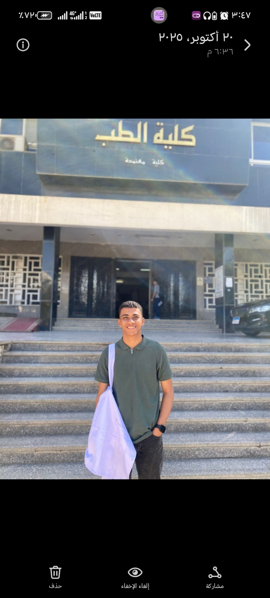
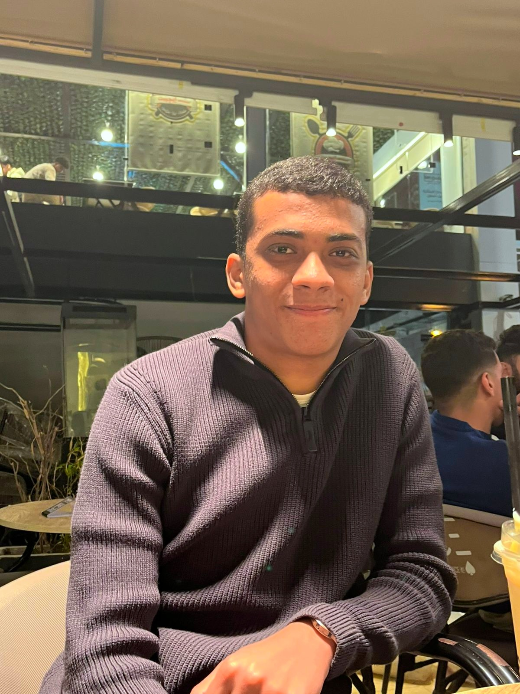
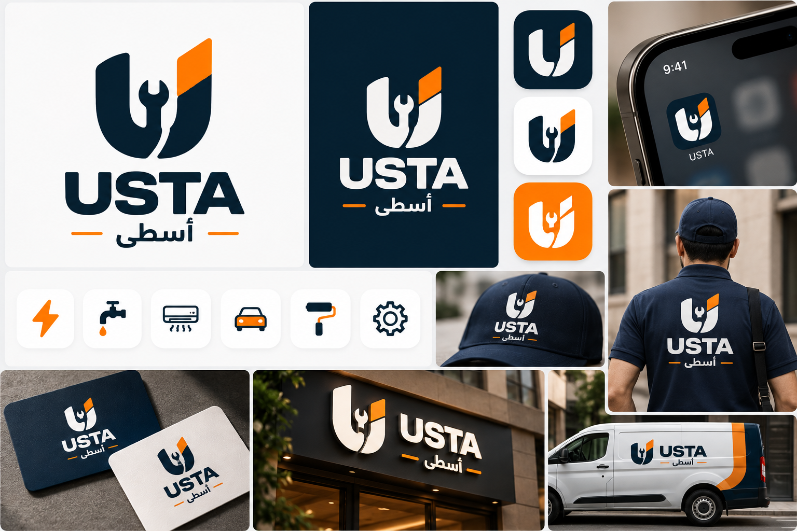
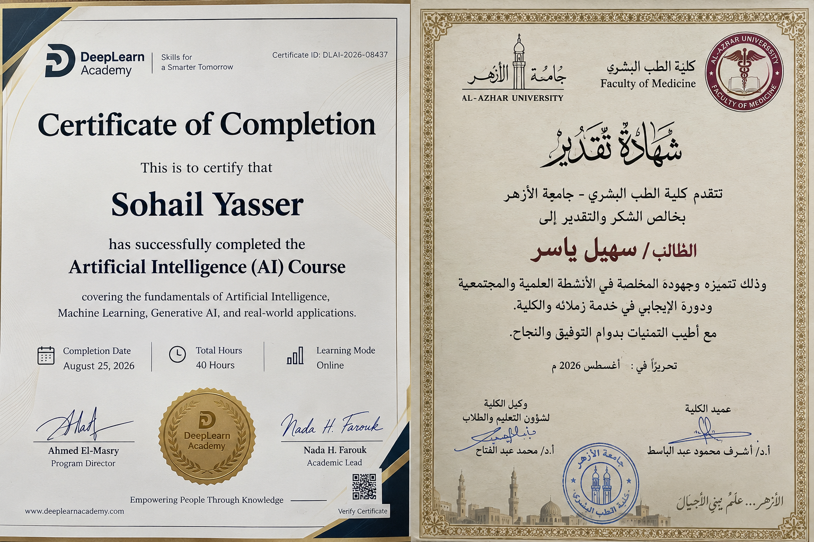
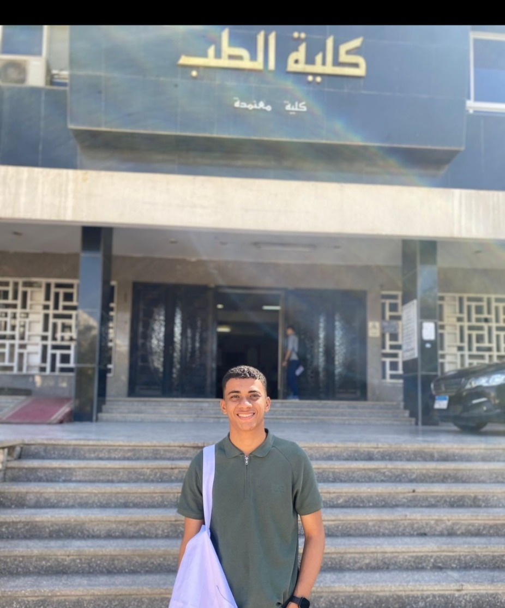

Gehaz Tech
A full from-scratch brand build covering identity, digital presence, market thinking, content, website and social setup.
I combine market understanding, content strategy, creative execution and data-minded thinking to turn ideas into clear digital systems.


Research → understand → strategize → create → measure → improve.
Many businesses create content and run campaigns without fully understanding what their audience signals are telling them. I approach marketing from the other direction: understand the market first, then build communication around it.
My work spans brand setup, audience research, segmentation, content strategy, storytelling, campaign planning and digital execution. I also enjoy using analytics and AI tools to make the workflow clearer, faster and more evidence-driven.
I’m also a medical student, which gives me a strong interest in healthcare and technical industries where clear communication and customer understanding matter.
Build the strategic foundation before publishing.
Turn audience problems into useful, relevant content.
Create a consistent presence across channels.
Use tools and performance signals to improve decisions.
A full from-scratch brand build covering identity, digital presence, market thinking, content, website and social setup.
Built audience segments, targeting logic, personas, content strategy, storytelling scripts, AI repurposing and campaign planning for a laptop retail brand.

Another live web output available to review alongside the core case studies.
Visual identity, educational content direction and a real digital brand environment developed as an end-to-end project.
Project documentation includes target audience work, content strategy, campaign concepts, client feedback and next-step recommendations.
Understand market, audience and competitors.
Organize customer problems and signals.
Define positioning, channels and content.
Produce messages, visuals and scripts.
Publish and connect the digital touchpoints.
Review performance and refine the next move.

40-hour course · August 2026 · Certificate ID shown on the original certificate
Medical student — part of the academic background behind my interest in healthcare and technical industries.
Medical Student · Cairo
For collaborations, marketing projects or digital work, reach me through WhatsApp or my professional social profiles.
The site intentionally separates personal accounts from client/project work, and uses real deliverables as proof rather than invented testimonials or performance claims.
Back to top ↑